Trimming, alignment, filtering and normalised signal tracks for ChIP, ATAC and CUT&Tag
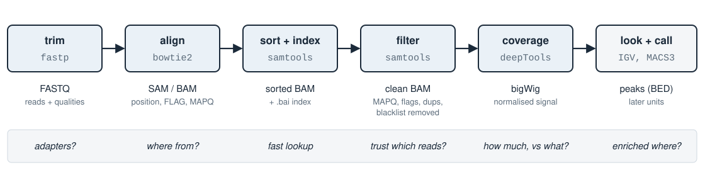
ChIP-seq, ATAC-seq and CUT&Tag measure different things, but they all hand you the same raw material: DNA fragments from enriched regions, read by a sequencer. This lecture is the shared processing that turns those reads into a signal track you can trust.
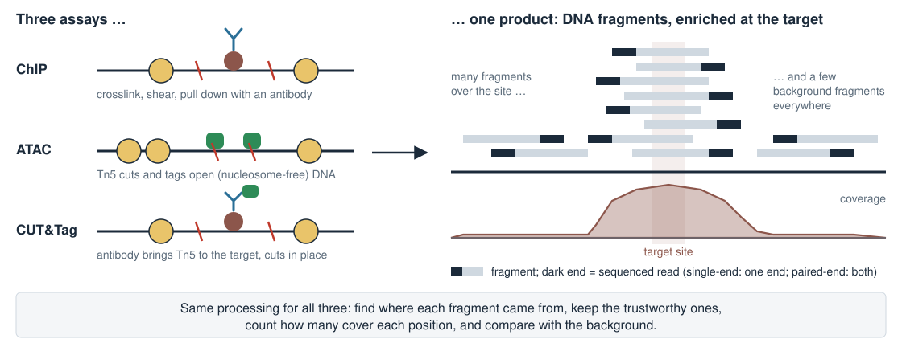
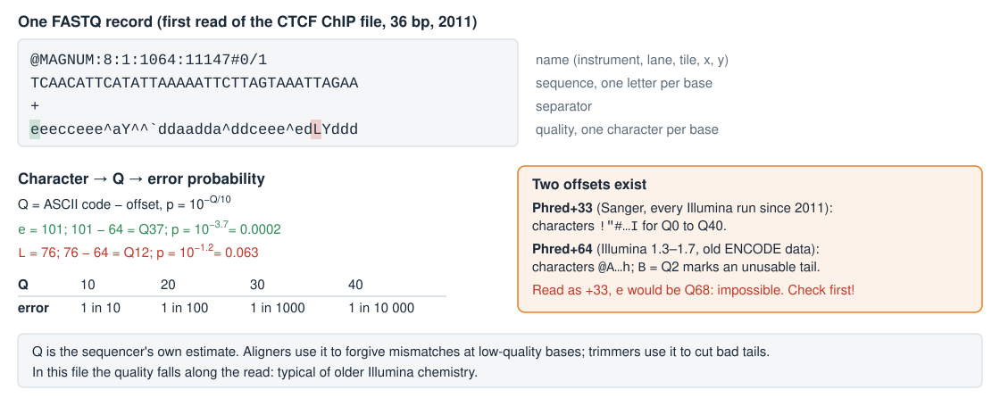
+, quality. Each quality character encodes Q = −10 log10(perror).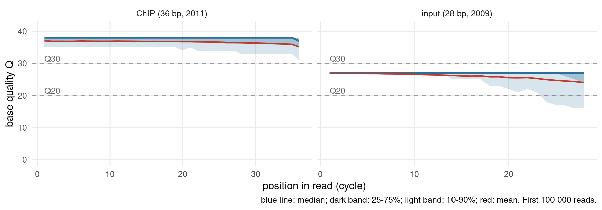
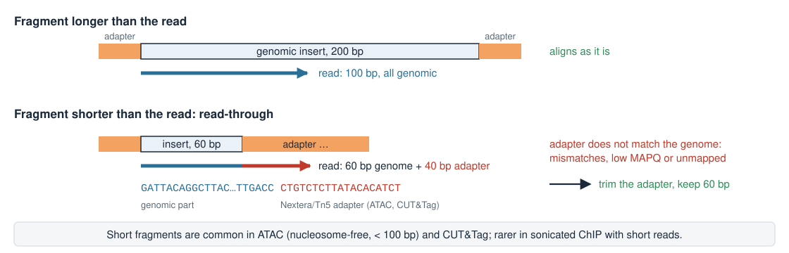
fastp detects adapters (from the data, or from the overlap of paired reads) and trims them, removes low-quality and too-short reads (tail trimming on request: --cut_right), and writes an HTML report.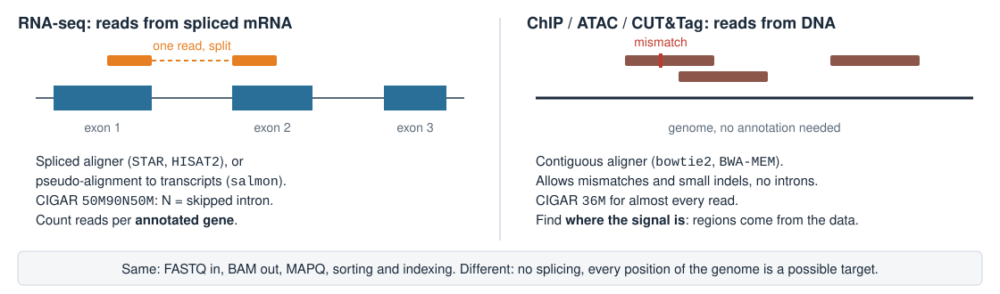
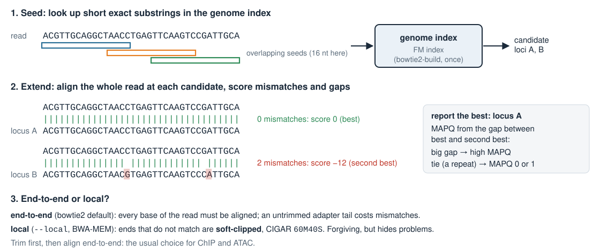
# once per genome: build the index (chr21 + chrM in this course; 27 s with 8 threads)
bowtie2-build --threads 8 hg38_chr21_chrM.fa hg38_chr21_chrM
# align, and sort by position on the way out (3 s for 380 000 reads)
bowtie2 -p 8 -x hg38_chr21_chrM -U chip.trim.fastq.gz 2> chip.bowtie2.log \
| samtools sort -@ 4 -o chip.sorted.bam -
samtools index chip.sorted.bam # .bai: jump to any region
samtools flagstat chip.sorted.bam # how many mapped, paired, duplicates ...
samtools idxstats chip.sorted.bam # reads per chromosome380570 reads; of these: 2014 (0.53%) aligned 0 times
291310 (76.55%) aligned exactly 1 time
87246 (22.93%) aligned >1 times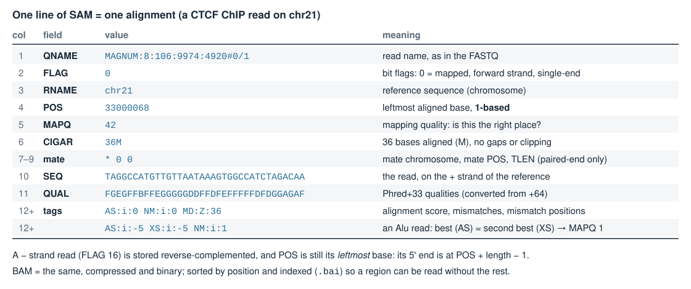
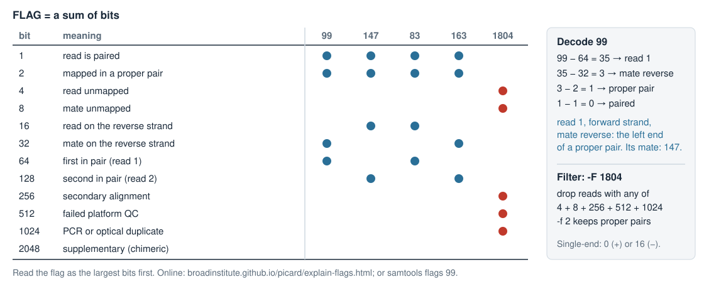
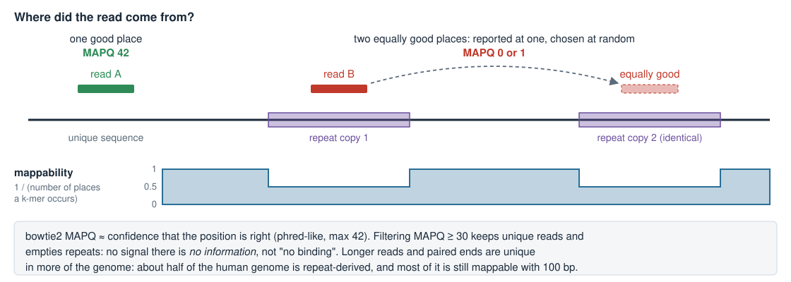
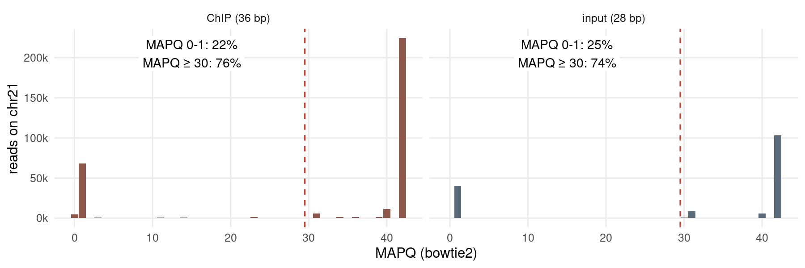
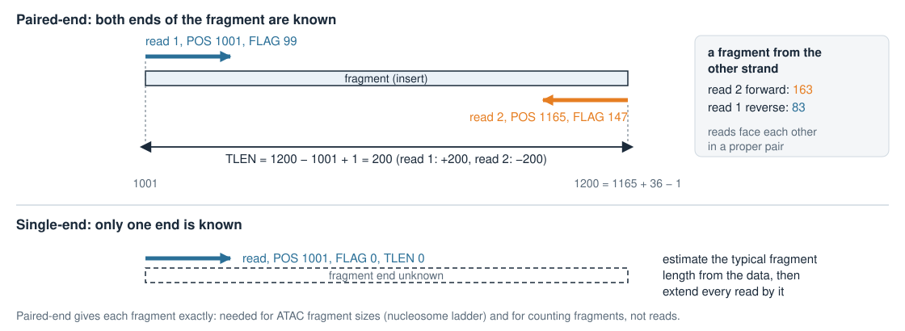
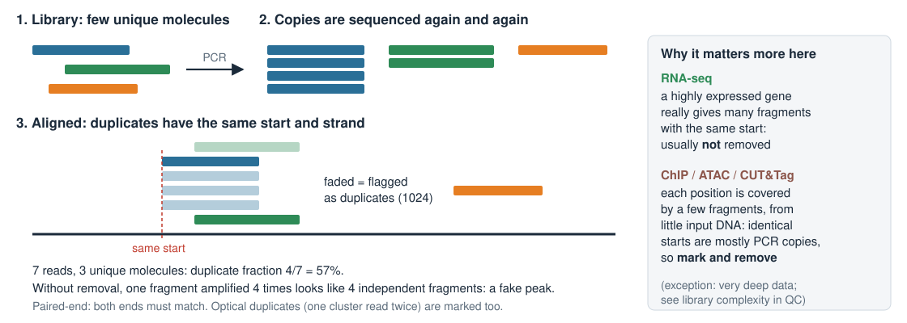
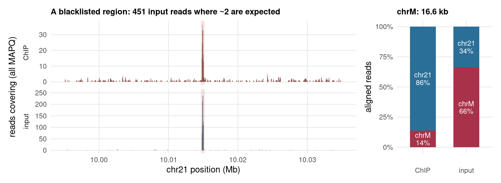
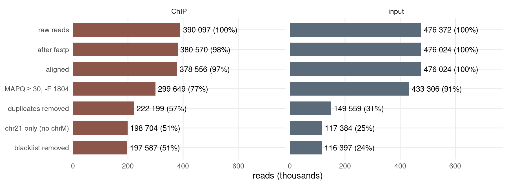
samtools view -b -q 30 -F 1804 -o chip.q30.bam chip.sorted.bam # unique, mapped, primary
samtools markdup -s chip.q30.bam chip.markdup.bam # flag duplicates (1024)
samtools view -b -F 1024 -o chip.dedup.bam chip.markdup.bam chr21 # drop them, and chrM
bedtools intersect -v -abam chip.dedup.bam -b blacklist.bed > chip.final.bam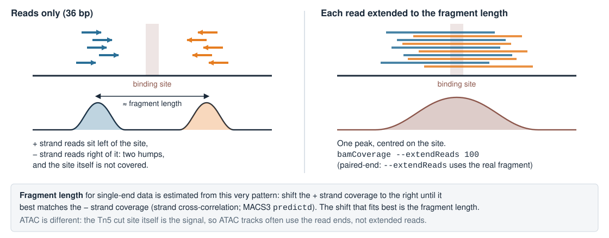
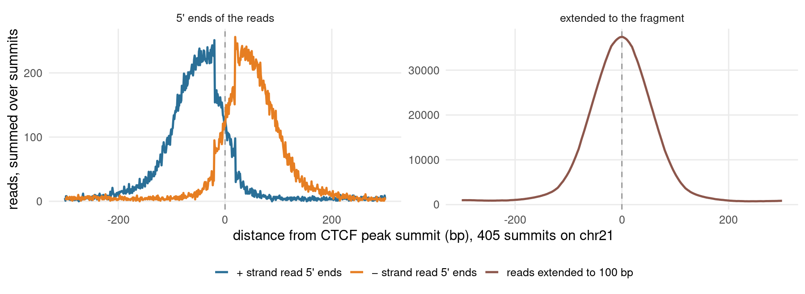
macs3 predictd estimates the same: 100 bp. Right: reads extended to 100 bp give one peak, centred on the summits.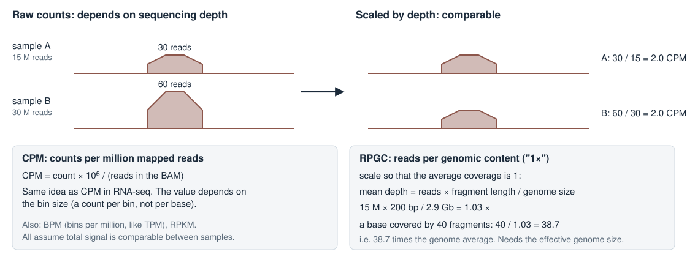
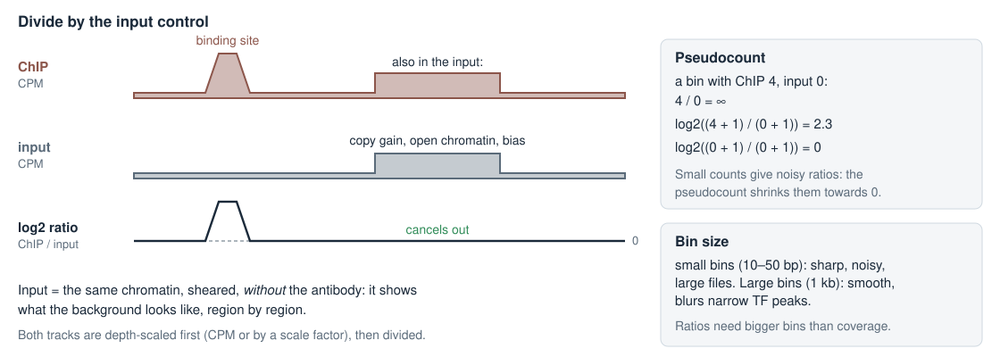
bamCompare scales both to the same depth, then reports ratio or log2 ratio per bin, with a pseudocount to avoid dividing by zero.# ChIP and input, each normalised to counts per million, reads extended to 100 bp
bamCoverage -b chip.final.bam -o chip.cpm.bw --normalizeUsing CPM --extendReads 100 --binSize 10 -p 8
bamCoverage -b input.final.bam -o input.cpm.bw --normalizeUsing CPM --extendReads 100 --binSize 10 -p 8
# the same ChIP track as "times the average coverage" (RPGC; chr21 only, so chr21's size)
bamCoverage -b chip.final.bam -o chip.rpgc.bw --normalizeUsing RPGC \
--effectiveGenomeSize 40088619 --extendReads 100 --binSize 10 -p 8
# ChIP over input: depth-scaled, log2 ratio in 50 bp bins, pseudocount 1
bamCompare -b1 chip.final.bam -b2 input.final.bam -o chip_vs_input.log2.bw \
--operation log2 --scaleFactorsMethod readCount --pseudocount 1 \
--extendReads 100 --binSize 50 -p 8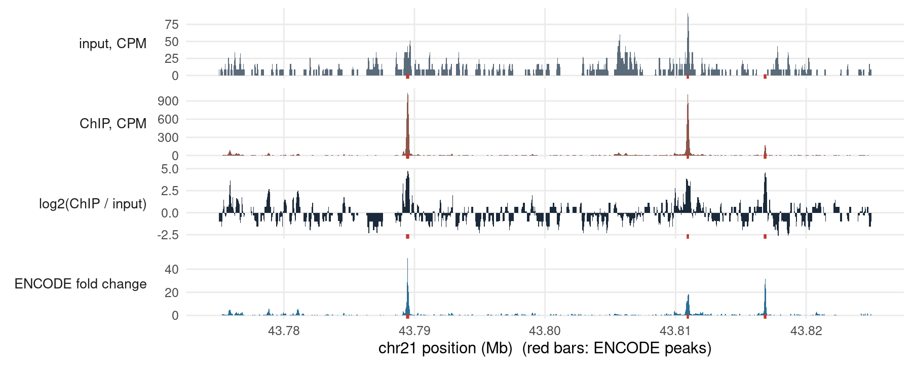
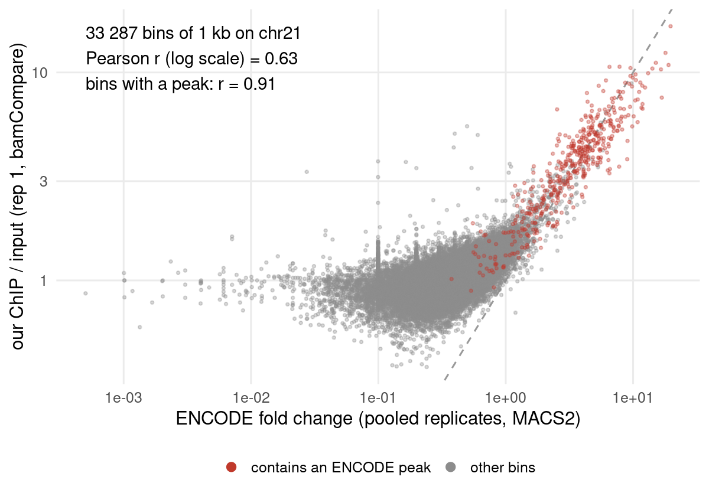
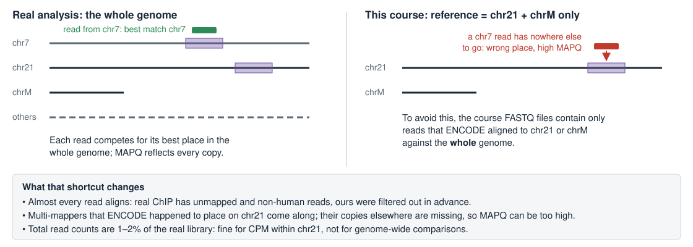
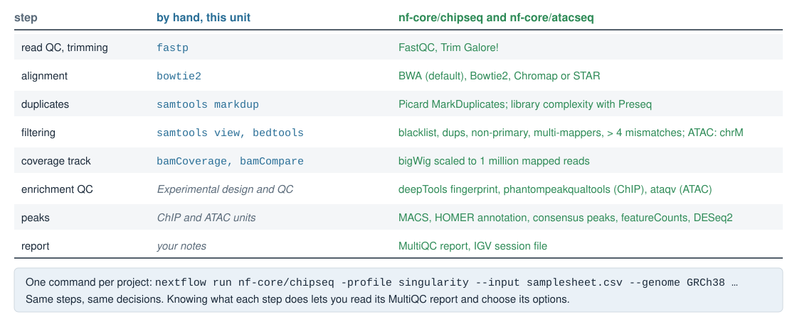
| step | key fact |
|---|---|
| FASTQ quality | Q = −10 log10 p; Q20 = 1% error, Q30 = 0.1%; check the offset (+33 or +64) |
| trimming | adapters appear when the fragment is shorter than the read; fastp |
| alignment | contiguous, no splicing: bowtie2 / BWA; seed and extend; end-to-end vs local |
| SAM | FLAG = sum of bits (99/147, 83/163, 16, 4, 1024); POS 1-based leftmost; TLEN = fragment |
| MAPQ | 0–1 = several equal places (repeats); keep ≥ 30; repeats become blind spots |
| duplicates | same start (and end): PCR copies; remove for ChIP/ATAC, not RNA-seq |
| blacklist, chrM | remove artefact regions and mitochondrial reads before normalising |
| coverage | extend single-end reads to the fragment (~100 bp here); CPM, RPGC; ratio to input |
Not required reading and not examined. For those who want the primary literature.